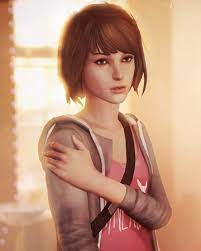
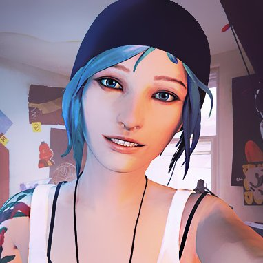
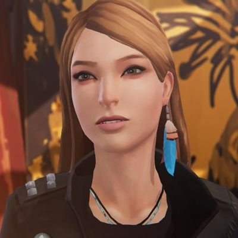
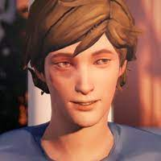
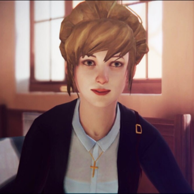
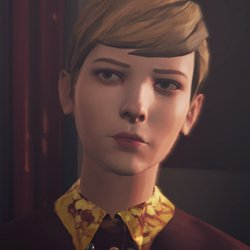
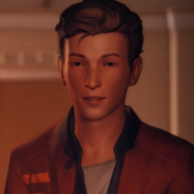
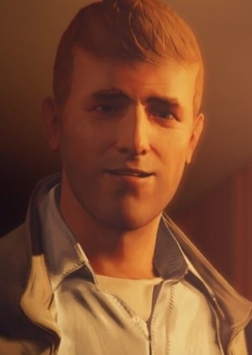
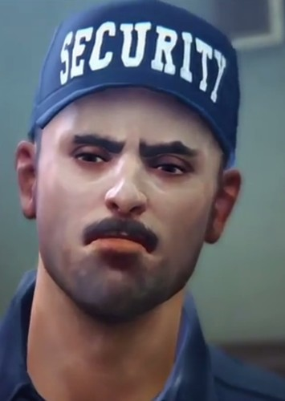
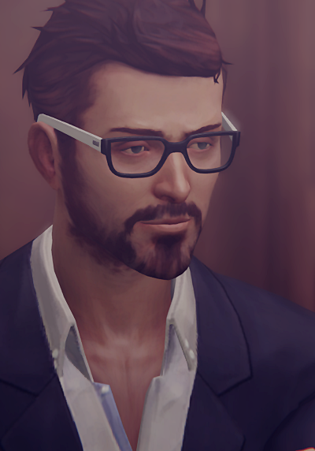

KARAKTERLER

Max, henüz 18 yaşındadır ve Blackwell Akademisinde okumaktadır, çocukluğunuda Arcadia Bay'de geçirmiştir, ancak 13 yaşındayken ailesi ile birlikte Seattle, Washington'a taşınmıştır ve çocukluk arkadaşı Chloe ile hiç konuşmamıştır. Beş yıl sonra ise Blackwell Academy'e fotoğrafçılık okumak için Arcadia Bay'e geri dönmüştür. Max fotoğrafçılığa bayılır ve analog Polaroid kamerasını fotoğraf çekmek için her yere götürür. Oldukça utangaçtır, genellikle becerileri hakkında şüpheleri vardır, ancak önemli olduğunda kendini nasıl savunacağını iyi bilir. Arcadia Bay'deki en yakın arkadaşları, ona ilgi gösteren sınıf arkadaşı Warren ve Max'in kararlarına bağlı olarak sınıf arkadaşı Kate Marsh oyun ilerledikçe ise Chloe ile tekrar arkadaşlığını sürdürür.

Chloe, Max’in çocukluk arkadaşıdır. Babası öldükten ve Max Seattle'a taşındıktan sonra Chloe, iyice içine kapanır ve daha sonra bir değişime uğrar mavi saçı, punk giyim tarzı, sayısız dövmesi ve çokça marihuana tüketir, sonradan ise sinirli ve asi bir karaktere dönüşür. Bu sinirli tavrı ise Chloe'den sorumlu hisseden Blackwell Academy güvenlik görevlisi üvey babası David ile olan ilişkisinden gelmektedir. Çeşitli suçlarla Blackwell Akademisinin müdürü Wells'den okuldan uzaklaştırma cezası alır. Chloe ve Rachel Amber iyi arkadaşlardır ya da bir ilişkileri vardır, ilişkilerini "Life Is Strange: Before the Storm" serisinde keşfedebilir ve oyuncuda etkilenebilir.

Rachel, Chloe'nin en iyi arkadaşıdır ve oyunun başında altı aydır kayıp olduğu öğrenilir. Kaybolmalarının gizemi ve açıklamaları Life is Strange'in hikâyelerinden biridir. Uyuşturucu satıcısı Frank Bowers ile gizli bir aşk yaşadığı ortaya çıkar, Chloe ise bunu bilmiyordu. Kaybolmasına rağmen Chloe'nin, Rachel'a olan derin bir duyguları vardır. Dördüncü bölümde ise, kaderi belli olur - Nathan akıl hocası Jefferson'ı taklit etmeye çalışırken uyguladığı aşırı dozda verdiği uyuşturucudan hayatını kaybeder.

Warren Daniel Graham, Blackwell Akademisi'nin öğrencisidir ve Max'in arkadaşıdir, bilime ilgisi vardır ve bilimi sever, aynı zamanda sanata ve fotoğrafçılığa ilgisi vardır. Klasik bir inektir çünkü hem bilim kurguya ilgi duyuyor hem de video oyunlarına. Warren, Max'e aşıktır.

Kate aslında neşeli bir insandır ve dindar bir aileden gelir dinine çok saygı duyar. Victoria, Nathan ve Vortex Club'ın diğer üyeleri tarafından zorbalığa uğrar, Vortex Club partisinde uyuşturucu çektiğine ve uygunsuz görüntülerinin internete sızdırılmış olduğuna dair video vardır ve video yüzünden okuldaki herkesten zorbalık görür. Victoria'nın yatılı oda duşundaki arkadaşıyla yaptığı konuşmada, Nathan'ın Kate'e ilaç verdiğini ve videoyu çektiğini söylüyor, ancak Kate buna dair bir kanıt bulamıyor.

Victoria, Arcadia Bay'in en zengin ailelerinden gelmektedir. Blackwell Academy'de ise çok popülerdir ve Okuldaki bütün kızlar Victoria ile takılmak ister. En iyi arkadaşlarından biri olan Nathan ile takılır kibirli, kaba, ukala ve küçümseyici olarak görünürler. Max ve Kate Marsh ile uğraşır Kate'le dalga geçer. Ebeveynleri ise bir galeriye sahiptir, bu yüzden Victoria, "sanat oyunu" için öğretmeni Mark Jefferson'a şantaj yapmaya çalışır. Ayrıca karanlık odada bir sonraki kurban olur.

Nathan'ın ailesi de zengin ve tüm şehre sahiptirler. Nathan bu yüzden her şeyi ve herkesi kontrol etme hakkına sahip olduğuna inanır. Victoria gibi o da kibirli, küçümseyen ve Vortex Club üyesidir. Nathan, Chloe tarafından ona uyuşturucu meselesi için kavga çıkar ve daha sonra onu bir tabanca ile yanlışlıkla Chloe'yi vurur ve Max'in geri sarma gücü ile hayata geri döner.

William Chloe'nin biyolojik babasıdır ve Joyce'un ilk kocasıdır. günümüzden tam beş yıl önce trajik bir trafik kazasında ölür. Chloe'nin asi bir serseri olmasının nedenlerinden biri de budur. Bölüm 3'te Max, bir fotoğraf kullanarak öldüğü güne geri gider ve araba anahtarlarını saklayarak ölümünü önleyebilir. Ancak bu, William'ın hayatta olduğu alternatif bir gerçeklik yaratır, ancak Chloe boynundan aşağı bir felç olduğunu görür ve tekerlekli sandalyede mahsur kalır. Price ailesi bu zamanda borç içinde yüzer. Bölüm 4'ün başında Max, Chloe için her şeyin kötüye gittiğini görür ve zamanı yine gerçekliğe alır William yine gerçeklikte ölü birisi olur.

David, Chloe'nin üvey babasıdır, ve birbirleriyle pek iyi anlaşamazlar. Askeri bir gazi ve Blackwell Academy'de kampüs güvenliği başkanı. Chloe onu istememe sebebi onun görüşüne göre babasının yerini almıştır. İlişki, savaş çabalarından dolayı David'in paranoyası ve kontrole bağımlılığı ile karmaşıktır. Askeri yıllarından itibaren davranış kalıpları ile çatışmalara cevap verir. Ayrıca birkaç ateşli silahı var. David ayrıca Mark Jefferson'dan hoşlanmaz. Ayrıca Rachel'a ne olduğunu ve akademide neler olduğunu öğrenmek ister. Ancak tüm planlarında başarısız olur, çünkü her şeye aksi davranır bu sonuç ise ona pek bir şey kazandırmaz.

Mark Jefferson, öğrencileri tarafından Bay Jefferson olarak adlandırılır, Blackwell Academy'de genç ve dinamik fotoğrafçılık eğitmeni. Jefferson, ünlü bir fotoğrafçıdır, Blackwell'de bir sergisi ve kendi kitabı vardır. Öğretimi, öğrenciler ve öğretim kadrosu ile çok popüler olmasının nedenlerinden biri olan rahat ve açık bir şekilde sunulmaktadır.